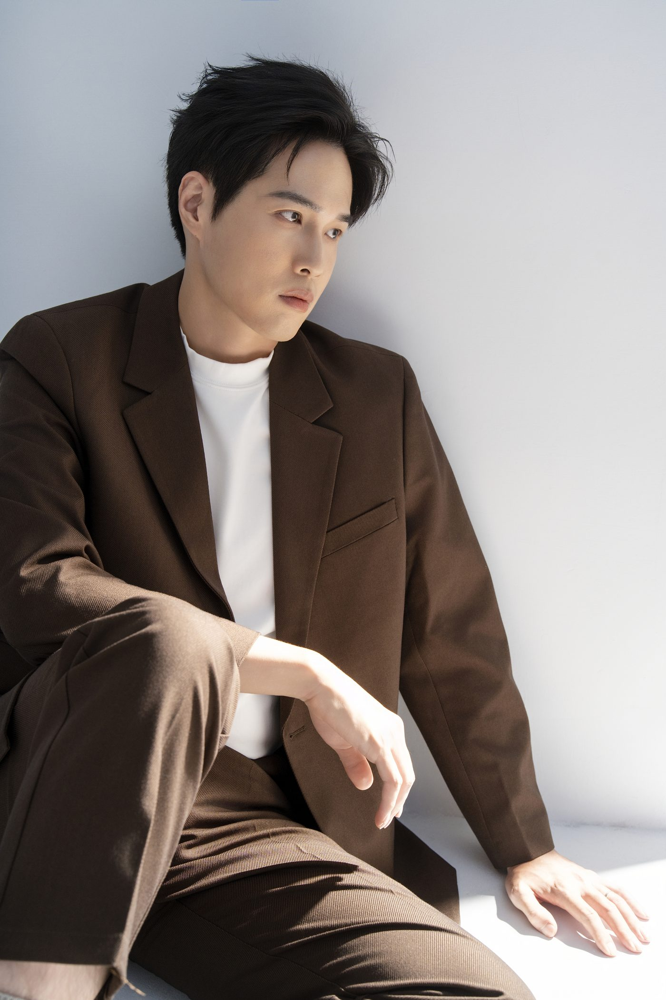
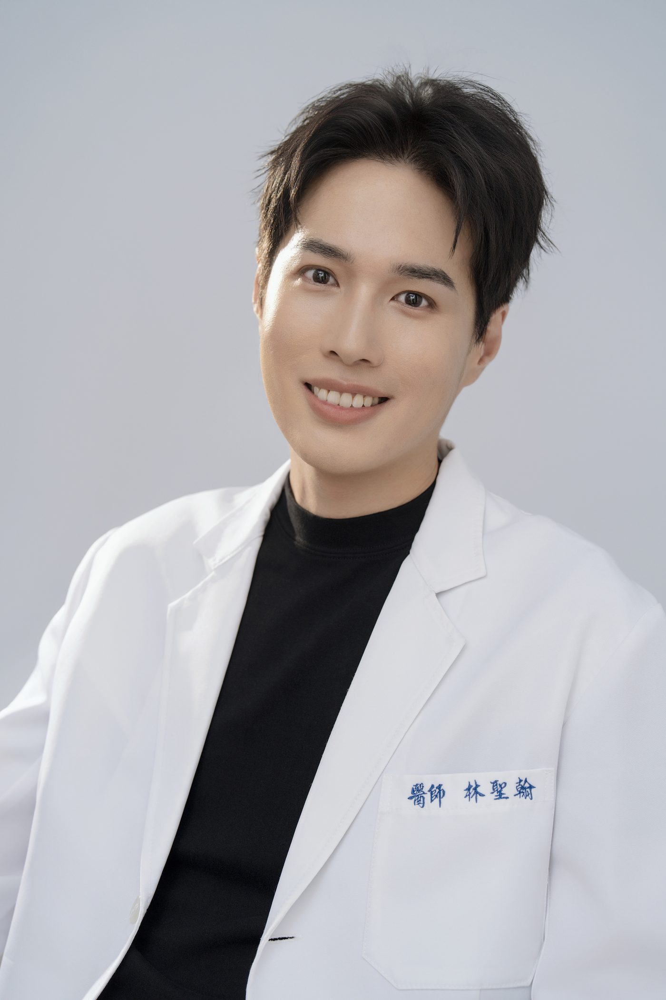
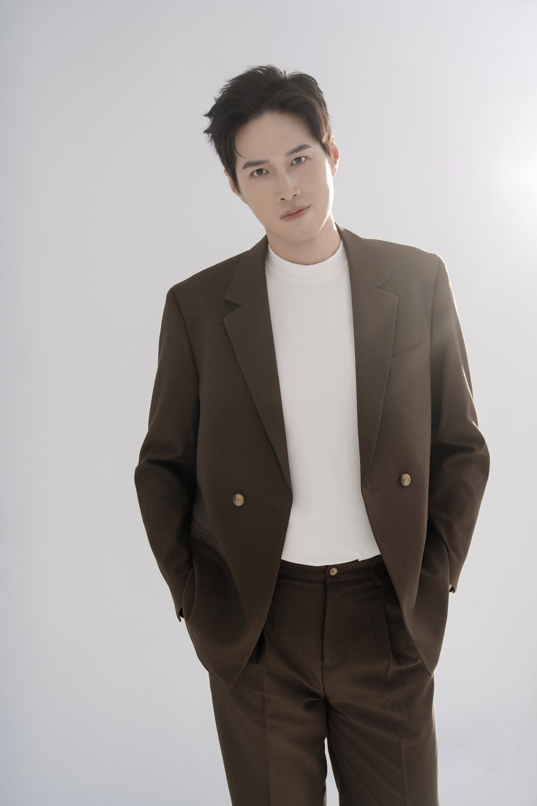
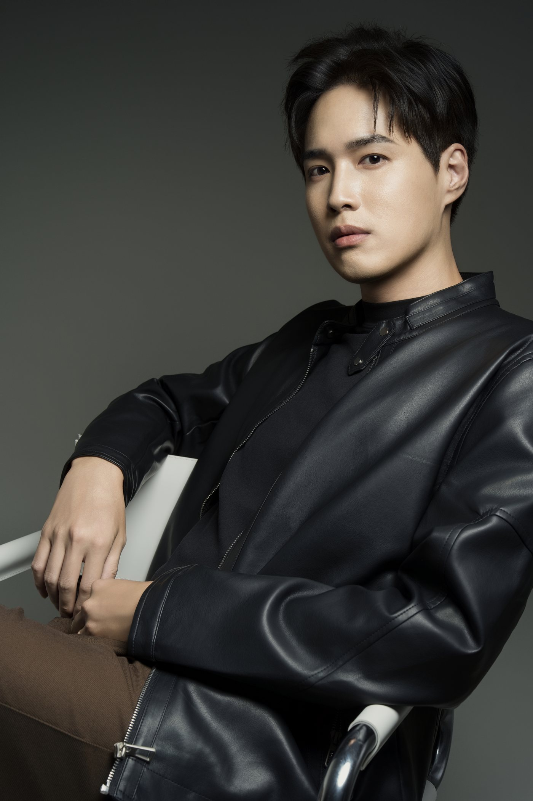
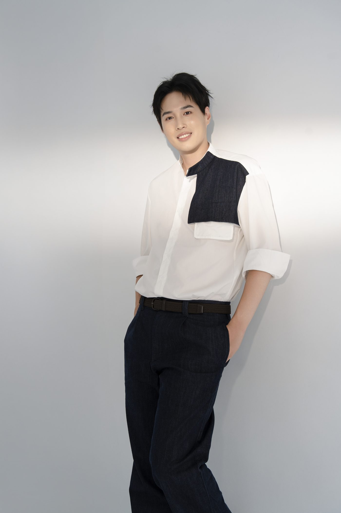

牙醫師 商業視覺整合企劃
從診間到台前
一位牙醫師的
形象升級
商業視覺整合企劃
前置期約兩個月
Four Looks · 四套服裝
- 01白袍
- 02駝色西裝
- 03黑色皮衣
- 04白襯衫與丹寧

Planning & Styling角色確認與服裝選品 À VoirHair & Make-up妝髮 B.roomPhotography攝影 C.photos
這是一位牙醫師重新規劃形象照的實際案例。
他原本對外使用的是一張正面半身照，放在診所官網與掛號頁，用來介紹醫療身分。他的個性比較內向，社群上放的多是治療作品，很少看得到他本人。
他希望照片保留醫師身分，也能呈現走出診間、參與公開活動的一面。這次規劃，就從他接下來想出現的場合開始。
In This Article · 本文重點
- 改造：從原本用於診所官網與掛號頁的正面半身照，延伸規劃白袍、西裝、皮衣與白襯衫丹寧四種造型。
- 拍攝：前置期約兩個月，服裝在拍攝前完成選品、訂購與試穿，當天妝髮由 B.room 完成。
- 應用：拍攝前先規劃診所、講座、媒體與社群的用途；拍完之後，他陸續接到品牌與醫學講座的邀約。
| 客戶 | 牙醫師，維持匿名 |
|---|---|
| 服務內容 | CHUN.EN 商業視覺整合企劃：角色與用途確認、服裝選品與定裝、妝髮、拍攝 |
| 前置期 | 約兩個月 |
| 本案服裝 | 4 種：白袍、駝色西裝、黑色皮衣、白襯衫與丹寧 |
| 用途規劃 | 診所官網與醫師介紹、講座主視覺、媒體、社群及專訪 |
改造的價值 · Transformation
從診間到台前，保留醫師身分，也加入個人風格
原本的照片只有一種構圖與正式程度。前期盤點時，預先列出接下來可能用到的畫面：講座主視覺需要的橫幅、提案使用的情境照，以及社群與專訪需要的人物素材。
這一案先確認他現在的角色與接下來想出現的場合，再決定服裝與拍攝方向。

白袍
保留醫療身分，作為診所官網與醫師介紹的服裝版本。

駝色西裝
以正式的西裝造型，對應講座主視覺、媒體版位與活動手冊的規劃。

黑色皮衣
相較西裝，穿著較輕鬆，個人風格也更鮮明，預留給社群與專訪。

白襯衫與丹寧
降低畫面的正式程度，準備作為社群、專訪與帶有生活感的人物素材。
四種造型各有方向；同一套服裝，也能透過表情、姿勢與構圖留下不同版本。
拍攝的價值 · The Shoot
服裝在拍攝前備好，當天依既定方向完成妝髮與拍攝
這次的前置期約兩個月。方向確認後，再進入服裝策略、選品、款式確認、報價與訂購；到貨後確認尺寸，並在拍攝前完成定裝。
四套服裝在前置期完成選品、訂購與試穿。髮型方向也先與設計師溝通，實際剪染由他安排，拍攝當天的妝髮則由 B.room 完成。
從找款式到搭配確認，都在拍攝前處理。他不用自己逐店找衣服，也不用到現場才決定穿什麼。選購完成的服裝由他留存，之後上台或出席工作場合，都能繼續搭配使用。
應用的價值 · In Use
四種造型的用途，在拍攝前就先規劃
| 服裝 | 本案預定用途 |
|---|---|
| 白袍 | 診所官網、醫師介紹，需要呈現醫療身分的版位。 |
| 駝色西裝 | 講座主視覺、媒體版位、活動手冊。 |
| 黑色皮衣 | 社群主視覺、專訪。 |
| 白襯衫與丹寧 | 社群、專訪，以及需要生活感的人物素材。 |
拍攝前先確認用途，就能把需要的畫面排進拍攝。之後放進不同版面時，再依照片比例、裁切與文字位置，挑出合適的版本。
拍完之後，他有了一組能放在社群與公開場合的人物照片，參加活動時也比較願意露臉。後來，他陸續接到口腔保健品牌與醫學講座的邀約。這些邀約不能直接歸因於形象照；能確認的是，在那之後，他有了更多可以使用的人物素材。
他在 Google 評論中，談到需求溝通與服裝造型
形象是一個人最直接的名片，感謝Zoey很精細的瞭解想要呈現的需求和服裝造型打造，是一個很值得的投資🤗Living OffRoad Studio｜Google 評論
如果你也在同一個位置
Your turn想走出原本的場域，或工作已經開始延伸，可以先整理兩件事：照片接下來會用在哪些公開場合，以及主要會由哪些人看到。
再檢查手上的照片，哪些能繼續使用、哪些可以重新裁切、哪些需要補拍。若照片用途已經清楚，可以直接安排相應的拍攝；如果連角色定位、服裝與妝髮方向都需要一起討論，再從整體企劃開始。
照片的用途多寡與服裝套數，可以分開考慮。先確定要呈現的內容，再決定需要哪些畫面與準備。
下一步 · Next
想為接下來的工作準備形象照？
從診所官網到講座與專訪，先把接下來需要的用途整理出來，再決定要補拍照片，或從角色與服裝一起規劃。
想先拍一組好用的形象照
C.photos 品牌／職業形象照 NT$20,000 起，拍攝前確認用途與主要版位，包含妝髮及現場表情、姿勢引導，拍攝當天完成方案內選片。
了解 C.photos 形象照 →想從角色定位、服裝到妝髮一起規劃
商業視覺整合企劃，從現在的角色與影像用途出發，由同一團隊統籌服裝選品、定裝、妝髮與拍攝。費用依服務範圍提案，服裝商品費用另計。
了解商業視覺整合企劃 →兩種服務交件後，都有自交件日起 90 日的使用支援，協助選圖、版位使用與影像部署模擬器操作。
不確定適合哪一種，可以先用 LINE 傳一張你現在用的照片，說說想用在哪裡，我們依用途回覆建議。
LINE 聊聊常見問題
FAQ已經有診所的大頭照，還需要另外拍嗎？
先檢查現有照片是否符合現在的外型、角色與版位。能符合用途的照片可以繼續使用；如果新的講座、提案或專訪需要其他比例與人物畫面，再依缺少的內容安排補拍或重新規劃。
白袍還要不要拍？
先看照片是否需要呈現醫療身分。用於診所官網、醫師介紹或醫療相關版位時，可以保留白袍版本；講座、專訪與個人品牌素材，則依主題與想呈現的風格選擇服裝。
衣服是你們準備，還是要自己買？
商業視覺整合企劃的服裝策略、選品、款式確認、報價與訂購由 CHUN.EN 處理。服裝商品費另計，選購完成的服裝由客戶留存，拍攝後可繼續用於工作場合。標準企劃不包含實體陪同選購，有特殊需求時可另行評估與報價。
拍幾套才夠？
先列出照片用途，再看哪些差異需要換服裝，哪些可以用同一套服裝的不同表情、構圖或裁切完成。本案準備四種服裝，其他專案依角色、使用需求與拍攝安排決定。
牙醫師形象照，只拍白袍夠嗎？
若照片主要用於醫療身分介紹，可以先以白袍為主要造型，再確認各版位需要的比例與構圖。若還想呈現講者、合作夥伴或較有個人風格的一面，再加入其他服裝。本案除了白袍，也規劃了駝色西裝、黑色皮衣，以及白襯衫與丹寧。

CHUN.EN 創辦人暨品牌主理人
服裝設計師出身，歷經台灣、上海與廣州共 10 年設計工作，其後投入造型領域逾 14 年。以商業視覺定位為核心，統整服裝、妝髮與影像，協助專業工作者與企業領導者，建立一致、清楚且有系統的專業形象。